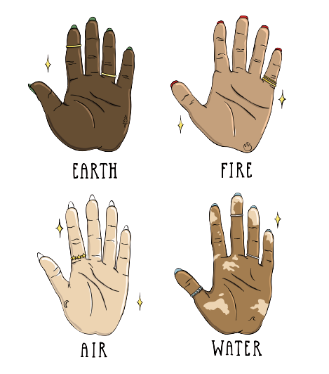
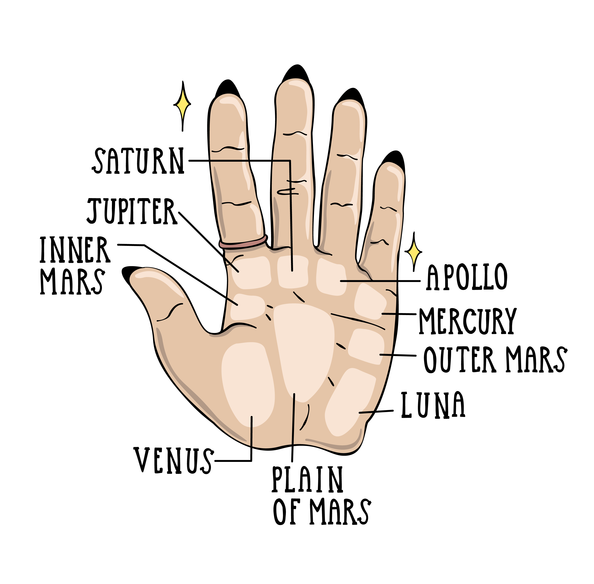
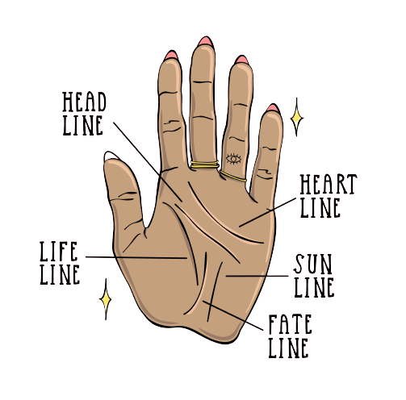

HOW TO DO YOUR OWN PALM READING
So, do you know how to read palms? Of all the divination practices, palm reading, also known as palmistry or chiromancy, is one of the most highly regarded, albeit difficult to grasp (pun definitely intended). Simply put, palmistry is the art of analyzing the physical features of the hands to interpret personality characteristics and predict future happenings. Within palm reading, hands are considered portals that shed invaluable insight. But, believe it or not, understanding palm reading basics — including the life line and the love line — isn't as difficult as you may think. Ahead, let's explore the basic theory and techniques of palm reading, along with tips and tricks to help you cultivate your unique approach. After all, once you learn how to interpret this powerful magical tool, your future literally lies in the palm of your hand.
After falling out of favor around the Middle Ages, palmistry underwent a monumental revival in the 19th century as interest in the occult grew. Chirological societies were founded to promote and advance the practice in the United Kingdom and the United States; palm readers such as the Dublin-born William John Warner, known by his pseudonym, Cheiro, amassed global followings. By the mid-1900s, palmistry was fully integrated within American pop culture.
Which palms should you read?
Though opinions vary, many modern readers believe it's important to analyze both the left and right hands: The non-dominant hand reveals natural personality and character, while the dominant hand shows how these traits have been actualized in practice. Together, they reveal how a person is utilizing their potential in this lifetime.
Just like when learning to read an astrology birth chart, palmistry takes time, practice, and expertise. When beginning your analysis, it's best to start with larger observations and work your way into more nuanced detail. While I encourage you to develop your own interpretations of different creases and shapes, familiarizing yourself with traditional conventions can help you develop a rich vocabulary that will help you interpret palms like a pro.
To get started, take your time to make a few silent observations. What is the texture of the hand? Is the front smooth? Rough? Moist? Dry? Are the fingers manicured or dirty? Remember, as a professional metaphysical practitioner, I can assure you that nothing should be overlooked in divination practices. Everything has meaning, and when you infuse your practice with intuition, you'll seamlessly extract the symbolism of even the smallest details and nuances.
How to Get Started Reading Palms
When beginning your analysis, it's best to start with larger observations, working your way into more nuanced detail. Though opinions vary, many modern readers believe it's important to analyze both the left and right hands: The non-dominant hand reveals natural personality and character, while the dominant hand shows how these traits have been actualized in practice. Together, they reveal how a person is utilizing their potential in this lifetime.
To get started, take your time to make a few silent observations with the querent's hand cupped in your own. What is the texture? Is the front smooth while the palm is rough? Are the fingers manicured or dirty? Remember, cosmic warriors, nothing should be overlooked in divination practices. Everything has meaning, and when you infuse your practice with intuition, you'll seamlessly extract the meaning of the smallest details.
Next, familiarize yourself with the hand shapes that correspond with the four elements: fire, earth, air, and water. After mastering hand shapes and their associated elements, you can get to know the mounts and plains of the hand, regions that correspond with major areas of life, as well as the lines and creases that tell a story about the future. Let's take a look at each of these.

What are the types of hands?
There are four basic hand shapes within palmistry, each connected with a different element — fire, water, earth, and air — and its associated traits. Although the four elements are also embedded in astrology, your hand type may not correspond with your astrological profile. For instance, while your sun sign might be Aries (a fire sign), the shape of your hand may be that of a water sign, revealing nuanced insight into the complexities of your personality.
What are earth hands?
Earth hands are identified by square palms and short fingers. These hands are often firm, solid, and fleshy. Individuals with earth hands are known to be practical, logical, and grounded. While secure and reliable, they can become too consumed with their immediate realities, which can ultimately hinder long-term planning and achievement.
What are fire hands?
You can tell a fire hand by its long palm and short fingers. These hands often have distinctive creases and defined mounds (read on for more about those). Individuals with fire hands are known to be passionate, confident, and industrious. They're driven by their desires and on a bad day they may lack tactfulness and empathy.
What are air hands?
Air hands have square palms and long fingers and are often boney, with protruding knuckles and spindly fingers. This hand type signifies intellectually curious individuals with innate analytical abilities and communication skills. Those with air hands are easily distracted and, if not stimulated, can become anxious or edgy.
What are water hands?
Water hands are distinguished by their long palms and long fingers. These hands are often soft to the touch and a bit clammy, with an overall narrow appearance. Those who have them are in tune with their emotions, intuition, and psychic ability. Fueled by compassion and imagination, these individuals are often creatives. They're also extremely sensitive and their feelings are easily hurt, causing undesirable interpersonal stress.

What are mounts and plains in palm reading?
After you've identified the hand type, begin observing the palm's natural topography. Fleshy areas called mounts and plains are related to different life themes. The classic mounts correspond with the seven classical planets within astrology: Apollo (the sun), Luna (the moon), Mercury, Venus, Mars, Jupiter, and Saturn. Rounded, slightly elevated mounts reveal attributes that are balanced and well-proportioned, while sunken mounts expose an individual's "blind spots" or underdeveloped qualities. Lastly, extremely prominent mounts reveal dominant characteristics that may be exaggerated or overemphasized.
What is the Mount of Jupiter?
Located at the base of the index finger (and above the Mount of Inner Mars), the Mount of Jupiter symbolizes confidence, ambition, and leadership. It reveals a connection to the spiritual realm, along with divine aptitudes.
What is the Mount of Saturn?
The Mount of Saturn is located at the base of the middle finger. This area corresponds to wisdom, responsibility, and fortitude. It reveals an individual's integrity, as well as their deep understanding of the ups and downs of life.
What is the Mount of Apollo?
Situated beneath the ring finger, the Mount of Apollo derives its name from the sun god of classical antiquity. Within palmistry, this area of the hand corresponds with an individual's optimism, vitality, and dynamic essence. Just as zodiac sun signs expose individuals' innate identity, the Mount of Apollo showcases artistic inclinations, happiness, and potential for success.
What is the Mount of Mercury?
Below the pinky finger, the Mount of Mercury is connected to communication and intelligence. This region is linked to wit, adaptability, and social skills, revealing an individual's strategic mind and resourcefulness.
What is the Mount of Luna?
Named after the ancient Roman goddess who personified the moon, the Mount of Luna symbolizes imagination, intuition, and psychic powers. Located toward the bottom of the palm on the pinky side, this area reveals an individual's empathy, compassion, and imagination.
What is the Mount of Venus?
Located at the base of the thumb, the Mount of Venus is linked to love, sensuality, and attraction. This zone showcases natural magnetism, as well as an individual's emotional connection to romance. Sexuality, passion, and indulgence are all under the auspices of this region.
What are the Inner Mars, Outer Mars, and the Plain of Mars?
Mars shows up quite a bit in palmistry. Named for the Roman god of war, these three distinctive sections represent aggression (Inner Mars), resilience (Outer Mars), and temperament (Plain of Mars), respectively. Inner Mars, also referred to as Lower Mars, is located above the thumb, and it symbolizes physical strength. Outer Mars, or Upper Mars, represents perseverance and emotional bravery. The Plain of Mars occupies the lower center of the palm and demonstrates how these two aforementioned qualities are balanced. Because the Plain of Mars is usually flat, its significance is determined by which lines occupy this section.

What do the lines on your palm symbolize?
The folds and creases of the palms — referred to as lines — are used to form narratives and predict future happenings. The meanings of lines are determined by analyzing their length, depth, and curvature. No two palms are unique, so remember that context is everything: Note where each line begins and ends, which mounts it crosses, and where the creases intersect.
What is the head line?
The mind plays a pivotal role in shaping our destiny, and the head line shines light on our intellectual curiosities and pursuits. Located in the center of the palm, it also reveals the lessons we need to learn in this lifetime. The complexity of an individual's mental pursuits corresponds with the line's depth, while the line's length reveals the breadth of the topics they explore. A wavy line signifies progressive thinking, while a straight line reveals more a traditional approach. Breaks in the line can signify mental strife, or more optimistically, monumental breakthroughs or epiphanies.
What is the heart line?
Located above the head line, the highest horizontal line on the palm is the heart line. Also known as the love line, this crease governs all matters of the heart, including romance, friendship, sexuality, and commitment. After identifying it, note whether it begins below the index or middle finger: If the heart line begins below the index finger, it reveals content in relationships; if it begins below the middle finger, it reveals the potential for restlessness. The depth of the line signifies the significance of interpersonal relationships in an individual's life, while the length corresponds with time spent coupled (longer lines represent lengthier partnerships). Broken heart lines can suggest multiple lovers, transformative bonds, or even infidelity. (Remember, cosmic warriors, a fractured heart line isn't an excuse for bad behavior).
What is the life line?
Located underneath the head line, your life line reveals your experiences, vitality, and zest. The depth of the line suggests the richness of your experience, while the length reveals others' influence on your individual path. A short or broken life line signifies independence and autonomy — not how long you will live.
What is the fate line?
Our palms naturally evolve over the course of our lives, but the fate line transforms the fastest. Also known as the line of destiny, the fate line is a vertical crease in the center of the palm that reveals the degree to which an individual's life will be influenced by external circumstances beyond their control. Whenever you're experiencing a massive shift, whether personal or professional, take a quick peek at the fate line. Has it changed? Palmists believe that itchy hands are a sign of upcoming shifts, so stay attuned to this physiological clue, as well.
What is the sun line?
The sun line, or Apollo's line, is the vertical crease furthest toward the pinky side of the palm, and it reveals public image, legacy, and fame. The sun line varies greatly in length, depth, and position, and alongside the fate line, it demonstrates how and when an individual will achieve success. If the sun line and fate line intersect or run parallel, they signal that an individual's prominence will be a byproduct of external events outside their control. If the sun line and fate line aren't close in proximity, they suggest that an individual's legacy will be built more independently of outside influences.
What does it all mean?
Remember, palmistry is not a cut-and-dried practice yielding exact answers. As you familiarize yourself with hand shapes, mounts, plains, and lines, your intuition will inspire you to develop your own patterns of interpretation. Keep in mind that both hands, as well as people, change with time. Every day is a new opportunity to steer our own destinies. Palmistry isn't set in stone — indeed, it's merely an opportunity to develop insight that illuminates the best path forward.
LEARN ANYTHING FROM THE SPACES BETWEEN YOUR FINGERS?
SPEAK TO OUR EXPERT !